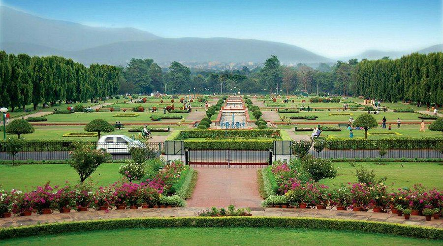
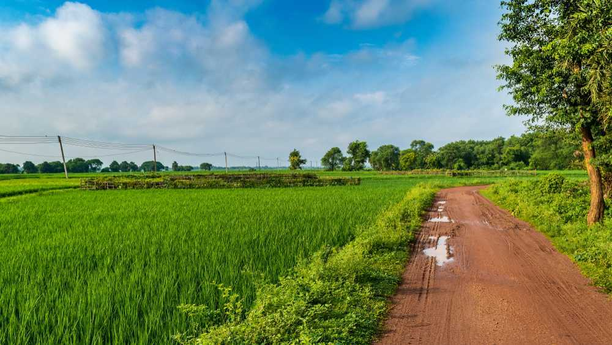
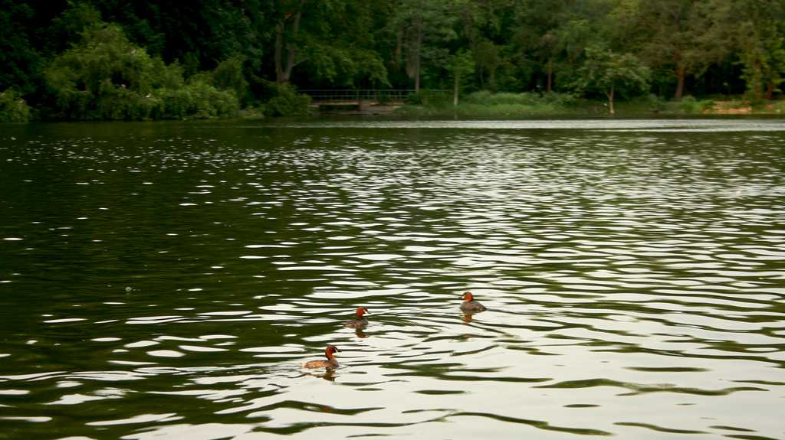
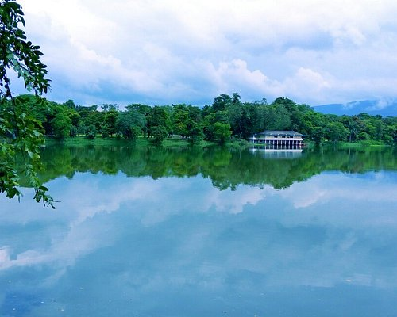

Jubilee Park, a 225-acre park in the heart of Jamshedpur, is a popular destination for recreation, offering a variety of attractions like an amusement park, a zoo, a lake, a Mughal garden, and well-lit fountains, all managed by Tata Steel.

Located in the Chhota Nagpur plateau, 93 Km away from Ranchi, Hazaribagh is a beautiful place with dense forests and natural formations including rock formations and lakes.

Massanjore is a city in the state of Jharkhand. The most popular tourist attraction here is the Massanjore dam, which lies just across the Mayurakshi River, in Dumka district of Jharkhand. This dam is sometimes referred to as ‘Canada Dam’ or ‘Pearson Dam’ because it was built with Canadian Aid way back in 1956.

Bokaro is a city with lakes, greenery and beautiful parks which make it a place suited for relaxation and peace. Besides being the center of India's industrial revolution back in the 1960s and 1970s, Bokaro has been able to establish itself as one of the most well-planned cities in the country.
Dassam Falls, located near Ranchi in Jharkhand, India, is a natural cascade of the Kanchi River, a tributary of the Subarnarekha River, falling from a height of 44 meters (144 feet).
The Maithon Dam is located at Maithon, 48 km from Dhanbad, in the state of Jharkhand India.It is just 24 km from Asansol city and one of the topmost visited place in Asansol region.
Parasnath Hills, a significant Jain pilgrimage site in Jharkhand, India, are named after the 23rd Jain Tirthankara and are known as "Sammed Sikhar" by Jains, with 20 of the 24 Tirthankaras believed to have attained salvation there.

The Russi Modi Centre of Excellence in Jamshedpur, Jharkhand, is a landmark building designed by Hafeez Contractor, housing the archives of Tata Steel and serving as the formal entrance to Jubilee Park, showcasing the history of the steel company and the city.
Baghmunda Waterfall, located near Tirra in Gumla, Jharkhand, is a popular tourist attraction known for its serene beauty and proximity to an ancient Lord Jagannath temple, offering opportunities for picnics, exploring the forest, and even rock climbing.

Jubilee Lake is considered mesotrophic, with an intermediate level of biological activity, and its drainage basin receives about 50 inches (1,300 mm) of precipitation annually.
The Topchanchi Wildlife Sanctuary, located in Dhanbad district, Jharkhand, India, is a protected area covering 8.75 sq km, featuring dry mixed deciduous forests, including dry peninsular sal forests, and is home to diverse wildlife like leopards, jungle cats, deer, and wild boar, as well as migratory birds at the Topchanchi Lake.
Deoghar, also known as Baidyanath Dham, is a sacred Hindu pilgrimage city in Jharkhand, India, famous for the Baidyanath Temple, one of the 12 Jyotirlingas of Shiva.